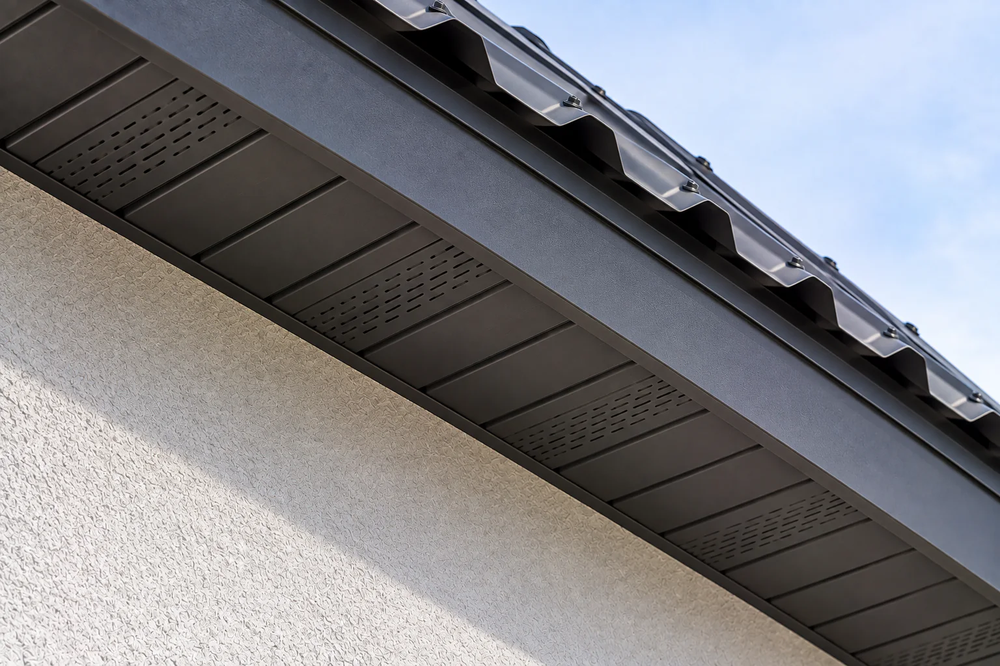

Каркас
Если свесу не на чем держаться, сначала собираю каркас карнизных и фронтонных свесов — 580 ₽/м.п. В цену подшивки он не входит.
Закрываю карниз и фронтон снизу. 680 ₽/м.п. — подшивка пластиковыми панелями. Доской — 780 ₽/м.п. Каркас свеса и покраска считаются отдельно. Отдельной строки «софиты» в прайсе нет. Работаю лично в Архангельске, Северодвинске и Новодвинске. Материалы в цену работ не входят.
от 680 ₽/м.п.
Позвонить: +7 921 484-08-74
Свес — это вынос крыши за стену. Подшивка закрывает его снизу и собирает вид карниза. Калькулятор укладки покрытия эти метры не считает.
Если свесу не на чем держаться, сначала собираю каркас карнизных и фронтонных свесов — 580 ₽/м.п. В цену подшивки он не входит.
680 ₽/м.п. Эту строку берут, когда ищут софиты: отдельной цены с таким названием в прайсе нет. Марку панелей на странице не назначаю.
Подшивка свесов доской — 780 ₽/м.п. Другой вид узла и другая строка, не скидка к панелям.
Доску при необходимости крашу в два слоя — 350 ₽/м.п. Для пластиковых панелей эта строка сама собой не добавляется.
«От 680» — самая низкая строка именно подшивки, пластиковые панели. Каркас дешевле, но это не подшивка. Покраска тоже отдельно.
Желоб на карнизе — не часть подшивки. Его цена на странице водостока. Полный список работ — в прайсе.
По фото карниза скажу, нужен ли каркас и чем подшивать: доской или пластиковыми панелями. Отдельной цены на софиты нет. Это не итоговая смета.
Открытый торец оставляет вынос стропил на виду. Подшивка собирает узел, но не заменяет кровлю и водосток.
Панели или доска закрывают вынос. Вентиляционные зазоры зависят от крыши: одну схему продухов на странице не назначаю.
Торцевой свес подшиваю той же логикой, но метры фронтона считаю отдельно от карниза.
Вынос задают стропила. Если концы сгнили, подшивка это не спрячет: сначала смотрю каркас.
Вода с кромки уходит в водосток. Подшивка желоб не заменяет и в его цену не входит.
Реальные кровельные работы, выполненные мной.
Нужен снимок свеса снизу или сбоку: видно, есть ли каркас и чем он закрыт сейчас.
Выбираю панели или доску. Софиты отдельной ценой не называю: в прайсе есть пластиковые панели.
До работ согласую каркас, подшивку и, если доска, покраску. Лишнюю строку не добавляю.
Закрываю карниз и фронтон. На выполненные работы — гарантия 1 год.
Пластиковыми панелями — 680 ₽/м.п., доской — 780 ₽/м.п. Каркас — 580 ₽/м.п., покраска в два слоя — 350 ₽/м.п. Материалы отдельно.
Отдельной строки «софиты» в прайсе нет. Закрытие карниза пластиковыми панелями — 680 ₽/м.п. Марку панелей согласую по объекту, на странице не назначаю.
Нет. Каркас карнизных и фронтонных свесов — 580 ₽/м.п. Его делаю, если крепить подшивку пока не к чему.
Нет. Желоба и трубы считаются на странице водостока. Подшивка закрывает свес снизу и воду с кровли не принимает.
Да. Работаю в Архангельске, Северодвинске и Новодвинске.
По снимку отделю каркас от подшивки панелями или доской. Покраску добавлю только если закрываю доской и она нужна.